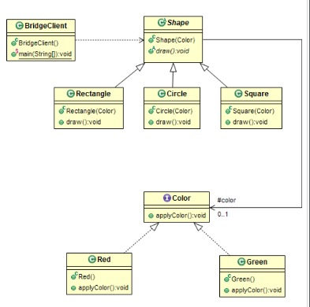

Bridge(桥接)
使用场景
- 当需要runtime绑定具体实现时候
- 为了支持由耦合接口和众多实现产生的类扩散
- 在多个实现之间共享实现并映射正交类层级结构
目的
将抽象与实现分离，以便两者独立变化。结构体

代码实现
Bridge模式是旧建议的应用，“更喜欢组合而不是继承”。 当你必须以彼此正交的方式子类化不同的时间时，它变得很方便。 假设您必须实现彩色形状的层次结构。 您不希望使用Rectangle和Circle子类化Shape，然后使用RedRectangle，BlueRectangle和GreenRectangle将Rectangle子类化为Circle，并将其与Circle相同。 您更愿意说每个Shape都有一个Color并实现颜色层次结构，这就是Bridge Pattern。
1. 定义Color
package me.chunsheng.gof.structural.bridge;
/**
* @author wei_spring
* @projectName Doraemon
* @description: 创建类-> Color
* @date 2019-06-13 13:47
*/
public interface Color {
void applyColor();
}
package me.chunsheng.gof.structural.bridge;
/**
* @author wei_spring
* @projectName Doraemon
* @description: 创建类-> Red
* @date 2019-06-1313:49
*/
public class Red implements Color {
@Override
public void applyColor() {
System.out.println("Red apply");
}
}
package me.chunsheng.gof.structural.bridge;
/**
* @author wei_spring
* @projectName Doraemon
* @description: 创建类-> Green
* @date 2019-06-1313:48
*/
public class Green implements Color {
@Override
public void applyColor() {
System.out.println("Green apply");
}
}
2.定义Shape
package me.chunsheng.gof.structural.bridge;
/**
* @author wei_spring
* @projectName Doraemon
* @description: 创建类-> Shape
* @date 2019-06-1313:50
*/
public abstract class Shape {
protected Color color;
public Shape(Color color) {
this.color = color;
}
public abstract void draw();
}
package me.chunsheng.gof.structural.bridge;
/**
* @author wei_spring
* @projectName Doraemon
* @description: 创建类-> Rectangle
* @date 2019-06-1314:03
*/
public class Rectangle extends Shape {
public Rectangle(Color color) {
super(color);
}
@Override
public void draw() {
System.out.print("Draw Rectangle in ...");
color.applyColor();
}
}
package me.chunsheng.gof.structural.bridge;
/**
* @author wei_spring
* @projectName Doraemon
* @description: 创建类-> Square
* @date 2019-06-1314:01
*/
public class Square extends Shape {
public Square(Color color) {
super(color);
}
@Override
public void draw() {
System.out.print("Draw square in...");
color.applyColor();
}
}
3.Client
package me.chunsheng.gof.structural.bridge;
/**
* @author wei_spring
* @projectName Doraemon
* @description: 创建类-> BridgeClient
* @date 2019-06-1314:03
*/
public class BridgeClient {
public static void main(String[] args) {
Shape[] shapes = {new Circle(new Red()), new Square(new Green()), new Rectangle(new Red())};
for (Shape shape : shapes) {
shape.draw();
}
}
}
Output
Draw circle in...Red apply
Draw square in...Green apply
Draw Rectangle in ...Red apply
Process finished with exit code 0
优点
- 解耦，允许在运行时选择实现
- 消除了对实现编译时期的依赖
- 提高了扩展性和灵活性
缺点
- 从实体到行为的委托，会影响性能
Java SDK 例子
- 在不同操作系统上显示不同的图像格式是Bridge模式的一个很好的例子。 您可能对jpeg和png图像都有不同的图像抽象。 所有操作系统的映像结构都是相同的，但每个操作系统的查看方式（实现）都不同。 这是Bridge模式允许的解耦类型。
- 特定于操作系统的设备驱动程序接口，用于定义各种设